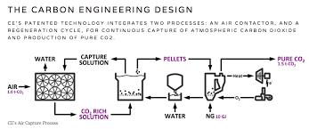
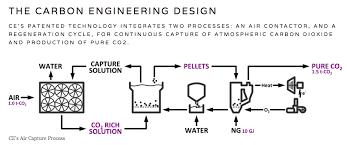
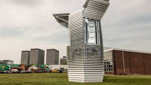

The Ocean Cleanup

The Ocean Cleanup, has raised an estimated $31.5 million to develop a drifting V-shaped system designed to collect plastic pollution at the ocean’s surface as currents push it along. The system is autonomous in that it will calculate the optimal locations to which it will deploy and float around at. It is powered by the ocean currents and solar energy allowing it to be energy neural. It is scalable allowing other systems to be attached as more funding comes in. Capture efficiency is greatly increased by decreasing the speed at which the plastic is captured. This helps minimize the downforce and keep the trash from flowing down and around the nets.
https://www.theoceancleanup.com
General Fusion

Transforming the world’s energy supply with the most practical path to fusion energy. Fusion energy is a clean, safe, abundant and on-demand alternative for power generation. General Fusion is developing the world’s first commercially-viable fusion power plant.
http://generalfusion.com
Carbon Engineering
 
http://carbonengineering.com
The Seabin Project

The Seabin Project is far more than a product, our ultimate goal is to “have pollution free oceans for our future generations”. To get there we are working to make the Seabin better and better and available to the maximum number of places. Also, educating and raising awareness to be able to one day live in a world where pollution devices are not needed.
http://seabinproject.com
Smog Free Project
Studio Roosegaarde is the social design lab of Dutch artist and innovator Daan Roosegaarde. Together with his team of designers and engineers Roosegaarde creates landscapes of the future for a better world. The studio connects people, technology and space to improve daily life in urban environments and spark imagination.
SMOG FREE PROJECT is a series of urban innovations led by Daan Roosegaarde to reduce pollution and provide an inspirational experience of a clean future. SMOG FREE TOWER, SMOG FREE RING and SMOG FREE BICYCLE provide a local solution of clean air in public spaces. Here along with governments, students and the clean-tech industry, people can work together to make a whole city smog free. Recent SMOG FREE PROJECTS have been launched in China, the Netherlands and Poland.
https://www.studioroosegaarde.net/project/smog-free-tower